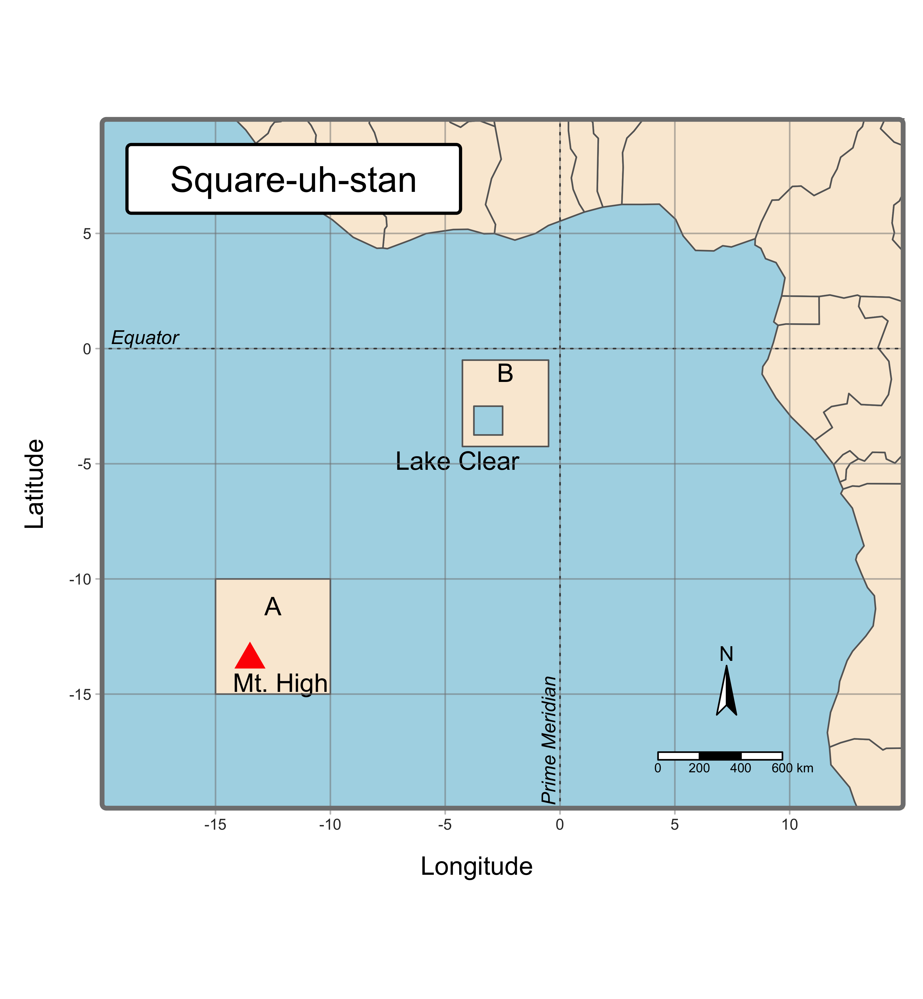

This is an introduction to working with vector data using the sf package. After the creation of some simple features, the data will be plotted in ggplot2 and tmap packages. For this post, a set of features is created around the intersection of the Prime Meridian and the Equator. This is a completely fictional world of two countries “A” and “B” in a region known as “Square-uh-stan.” Country A contains a polygon named “Lake Clear” and Country B contains a point named “Mt. High”. Africa will be used as the base layer and will frame the upper and right side of the map. Coordinate Reference Systems (CRS) are the underpinnings of all GIS work. To keep things simple, the “EPSG:4326” CRS is used.
This section will demonstrate working with maps, show how to create some simple feaures, and plot Beijing and Tokyo on a map using base graphics.
Whenever you work with maps, you’re going to be working with a lot of layers in the plotting phase and, at least for me, it takes a lot of time to get things to look right. For the creation of Square-uh-stan, here are the basic steps that are undertaken when creating a map:
- create simple features
- convert to sfc
- set CRS
- add attributes / convert to sf (1-4 are usually done in the background)
- plot (base/ggplot2/tmap)
- add base map
- decide layers (countries, water features, cities, shipwrecks, etc)
- add annotations
- add compass rosette
- add distance scale
- add labels
- set theme
- exhaustive tinkering
There’s no strict rules on how to go about creating a map, but that’s what my workflow usually looks like.
In working with simple feature data, three abbreviations are critical to understanding the procedure: “sfg”, “sfc”, and “sf”. The order of creation is:
simple feature geometry or “sfg”
simple feature column or “sfc” which is a list-column with the geometries for each feature (record)
simple feature “sf” which is the final evolution and is a table (data.frame) with feature attributes (data) and feature geometries (polygons, points, lines, etc.). You can use dplyr to work with the data.
The diagram below describes how to begin with a simple point, for example, and ultimately to have an object of class sf. Most often, you won’t need to know the steps behind the creation of an sf object, it will be enough to read it into memory and plot it.
Beijing & Tokyo Example
Here’s an example where two points are created. The two points are the latitutde and longitude of Beijing and Tokyo. I opened google maps and just copied and pasted the coordinates below. The population numbers are just an estimate.
beijing <- sf::st_point(c(116.338348, 39.909982))
tokyo <- sf::st_point(c(139.488645, 35.720886))
city_geom <- sf::st_sfc(list(beijing, tokyo), crs = "EPSG:4326")
city_attrib <- data.frame(name = c("Beijing", "Tokyo"), pop = c(14000000, 22000000),
date = as.Date("2022-01-01"))
city_sf <- sf::st_sf(city_attrib, geometry = city_geom)
Base Plot Beijing and Tokyo
There is a world map in the rnaturalearth package. The map was subset to the “Asia” continent and used as the first layer in the plot.
asia <- rnaturalearth::ne_countries(continent = "Asia")
chn_jap <- rnaturalearth::ne_countries(country = c("China", "Japan"))
plot(asia$geometry, axes = T)
plot(chn_jap$geometry, col = "gray90", add = T)
plot(city_sf["name"], add = T, pch = 16, cex = 1.5)
text(x = 110, y = 37, label = "Beijing", cex = 0.75)
text(x = 143, y = 31, label = "Tokyo", cex = 0.75)
title("Capitals of China and Japan")

Create Square-uh-stan
Here, a handful of common geometries are created: 3 polygons, 2 line strings and a single point. For reference, I used the vignettes for the sf package and you can find them by running vignette(package = "sf"). They are really, really helpful.
library(sf)
#load world map
afrc <- rnaturalearth::ne_countries(continent = "Africa")
# create simple features
land_1 <- st_polygon(list(rbind(c(-10, -10), c(-10, -15), c(-15, -15), c(-15, -10), c(-10, -10))))
land_2 <- land_1 * .75 + 7
lake <- land_1 * .25
mountain <- st_centroid(land_1 - 1)
pm <- st_linestring(matrix(c(0, -20, 0, 20), ncol = 2, byrow = T))
eq <- st_linestring(matrix(c(-20, 0, 20, 0), ncol = 2, byrow = T))
# sfc
land_sfc = st_sfc(list(land_1, land_2))
lake_sfc = st_sfc(lake)
mountain_sfc <- st_sfc(mountain)
pm_sfc <- st_sfc(pm)
eq_sfc <- st_sfc(eq)
# set CRS
land_sfc_wgs = st_sfc(land_sfc, crs = "EPSG:4326")
lake_sfc_wgs = st_sfc(lake_sfc, crs = "EPSG:4326")
mountain_sfc_wgs <- st_sfc(mountain_sfc, crs = "EPSG:4326")
pm_sfc_wgs <- st_sfc(pm_sfc, crs = "EPSG:4326")
eq_sfc_wgs <- st_sfc(eq_sfc, crs = "EPSG:4326")
# add labels
country <- c("A", "B")
land_sfc_wgs_df = st_sf(country = country, land_sfc_wgs)
name <- "Mt. High"
mountain_sfc_wgs_df = st_sf(name = name, mountain_sfc_wgs)
name <- "Lake Clear"
lake_sfc_wgs_df <- st_sf(name = name, lake_sfc_wgs)
name <- "Equator"
eq_sfc_wgs_df <- st_sf(name = name, eq_sfc_wgs)
name <- "Prime Meridian"
pm_sfc_wgs_df <- st_sf(name = name, pm_sfc_wgs)
ggplot2 is the defacto standard in R for plotting. This is a solid choice for plotting maps and may dovetail nicely with your existing workflow. The operable functions are geom_sf and coord_sf. For those in a hurry to get something plotted, I’d recommend this method first and reference Hadley Wickham’s discussion in Chapter 6 - Maps in the ggplot2 book.[2]
Code
# plot ggplot2
library(ggplot2)
library(ggspatial)
ggplot() +
# add layers
geom_sf(data = afrc, fill = "antiquewhite") +
geom_sf(data = land_sfc_wgs_df, fill = "antiquewhite") +
geom_sf(data = lake_sfc_wgs_df, fill = "lightblue") +
geom_sf(data = mountain_sfc_wgs_df, color = "red", shape = 17, size = 3) +
geom_sf(data = pm_sfc_wgs_df, linetype = "dashed") +
geom_sf(data = eq_sfc_wgs_df, linetype = "dashed") +
# add annotations
geom_sf_text(data = land_sfc_wgs_df,
aes(label = country),
nudge_y = 1) +
geom_sf_text(data = mountain_sfc_wgs_df,
aes(label = name),
nudge_y = -.75,
nudge_x = .75) +
geom_sf_text(data = lake_sfc_wgs_df,
aes(label = name),
nudge_y = -1) +
geom_sf_text(data = eq_sfc_wgs_df,
aes(label = name),
nudge_y = .75,
nudge_x = 2.5,
color = "gray50",
fontface = "italic") +
annotate(geom = "text", x = -.75, y = -15, label = "Prime Meridian",
fontface = "italic", color = "grey50", angle = 90) +
# restrict frame
coord_sf(xlim = c(-20, 15),
ylim = c(-20, 10),
expand = F) +
# add direction
annotation_north_arrow(
which_north = "grid",
height = unit(.75, "cm"),
width = unit(.75, "cm"),
location = "br",
pad_x = unit(3.2, "cm"),
pad_y = unit(1, "cm")
) +
# add scale
annotation_scale(pad_x = unit(3.5, "in")) +
# add labels
labs(title = "Square-uh-stan",
subtitle = "ggplot2",
x = "longitude",
y = "latitude",
caption = "Source: My Data Source") +
# add theme
theme_bw() +
theme(panel.grid.major = element_line(
color = gray(.5),
linetype = "dotted",
linewidth = 0.25),
panel.background = element_rect(
fill = "lightblue")
)
Plot
Creation of the plot was straightforward and comforting as I’ve grown accustomed to the ggplot2 syntax. Now on to tmap!
The tmap package is not something I was very familiar with, although it is referenced in parallel with ggplot2 in most comprehensive discussions. The “Geocomputation with R” e-book emphasizes the tmap package stating
tmap is a powerful and flexible map-making package with sensible defaults. It has a concise syntax that allows for the creation of attractive maps with minimal code which will be familiar to ggplot2 users. It also has the unique capability to generate static and interactive maps using the same code via tmap_mode(). Finally, it accepts a wider range of spatial classes (including sf and terra objects) than alternatives such as ggplot2.[1]
For the code below, the development package from GitHub was installed, which was recommended in “Geocomputation with R.”
remotes::install_github("r-tmap/tmap")
Code
library(tmap)
library(tmaptools)
tmap_options_reset()
box <- tmaptools::bb(afrc, xlim = c(-20, 15), ylim = c(-20, 10))
tm <-
tm_shape(afrc, bb = box) +
tm_borders("gray50", lwd = .25) +
tm_polygons(fill = "antiquewhite") +
tm_shape(land_sfc_wgs_df) +
tm_borders("gray50", lwd = .25) +
tm_polygons("country", fill = "antiquewhite") +
tm_text("country", ymod = 1) +
tm_shape(lake_sfc_wgs) +
tm_polygons(fill = "lightblue") +
tm_text("Lake Clear", ymod = -1.3, xmod =-1) +
tm_shape(mountain_sfc_wgs_df) +
tm_symbols(size = 1, fill = "red", shape = 17) +
tm_text("Mt. High", ymod = -.75, xmod = 1) +
tm_shape(eq_sfc_wgs_df) +
tm_lines(lty = "dotted") +
tm_text("Equator", xmod = -18, ymod = .5, fontface = "italic", alpha = .5, size = .75) +
tm_shape(pm_sfc_wgs_df) +
tm_lines(lty = "dotted") +
tm_text("Prime Meridian", ymod = -17, xmod = -.5, fontface = "italic",
alpha = .5, size = .75, angle = 90) +
tm_xlab("Longitude") +
tm_ylab("Latitude", rotation = 90) +
tm_grid(labels.show = T, alpha = .5) +
tm_compass(position = c(.75, .25)) +
tm_scalebar() +
tm_title_in("Square-uh-stan",
size = 1.4,
padding = c(.5, 1, .5, 1),
position = tm_pos_in("left", "top"),
bg.color = "white",
frame = "black",
frame.lwd = 2) +
tm_layout(
bg.color = "lightblue",
inner.margins = 0,
frame = "grey50",
frame.lwd = 3,
frame.double.line = F,
outer.bg.color = "#00000000"
)
Plot
I had a lot of difficulty working with the development package and the documentation available online. Eventually, the end product came very close to what I expected. The map “title” was really far away from the plotting area so to solve it, I inserted the title within the frame. Axes labels were another difficult area and the documentation wasn’t very helpful.

The sf package makes it easy to create and manipulate geographic features, particularly if the object is in its final phase with an sf class. For static maps, ggplot2 is an option when looking for a polished final plot for a publication. tmap may be worth the effort to learn. The package is easy to use and can allow for greater flexibility when dealing with a variety of sf objects. Many thanks for visiting the region of Square-uh-stan and we hope you’ll return soon!
This blog post was made possible thanks to all of those who devote time to educating others. In creating this post, I relied on dozens of resources. So many in fact, a separate repository awesome-maps-r was created to track the resources.
[1]
R. Lovelace, J. Nowosad, and J. Muenchow, Geocomputation with R. Chapman and Hall/CRC, 2019.
[3]
R Core Team,
R: A language and environment for statistical computing. Vienna, Austria: R Foundation for Statistical Computing, 2024 [Online]. Available:
https://www.R-project.org/
[5]
H. Wickham, R. François, L. Henry, K. Müller, and D. Vaughan,
Dplyr: A grammar of data manipulation. 2023 [Online]. Available:
https://dplyr.tidyverse.org
[6]
H. Wickham
et al.,
ggplot2: Create elegant data visualisations using the grammar of graphics. 2024 [Online]. Available:
https://ggplot2.tidyverse.org
The views, analysis and conclusions presented within this paper represent the author’s alone and not of any other person, organization or government entity. While I have made every reasonable effort to ensure that the information in this article was correct, it will nonetheless contain errors, inaccuracies and inconsistencies. It is a working paper subject to revision without notice as additional information becomes available. Any liability is disclaimed as to any party for any loss, damage, or disruption caused by errors or omissions, whether such errors or omissions result from negligence, accident, or any other cause. The author(s) received no financial support for the research, authorship, and/or publication of this article.
─ Session info ───────────────────────────────────────────────────────────────────────────────────────────────────────
setting value
version R version 4.3.2 (2023-10-31)
os macOS Monterey 12.5.1
system x86_64, darwin20
ui X11
language (EN)
collate en_US.UTF-8
ctype en_US.UTF-8
tz America/New_York
date 2024-05-30
pandoc 3.1.1 @ /Applications/RStudio.app/Contents/Resources/app/quarto/bin/tools/ (via rmarkdown)
─ Packages ───────────────────────────────────────────────────────────────────────────────────────────────────────────
package * version date (UTC) lib source
blogdown * 1.19 2024-02-01 [1] CRAN (R 4.3.2)
bookdown 0.39 2024-04-15 [1] CRAN (R 4.3.2)
bslib 0.7.0 2024-03-29 [1] CRAN (R 4.3.2)
cachem 1.1.0 2024-05-16 [1] CRAN (R 4.3.3)
cli 3.6.2 2023-12-11 [1] CRAN (R 4.3.0)
codetools 0.2-19 2023-02-01 [1] CRAN (R 4.3.2)
colorspace 2.1-0 2023-01-23 [1] CRAN (R 4.3.0)
devtools * 2.4.5 2022-10-11 [1] CRAN (R 4.3.0)
digest 0.6.35 2024-03-11 [1] CRAN (R 4.3.2)
dplyr 1.1.4 2023-11-17 [1] CRAN (R 4.3.0)
ellipsis 0.3.2 2021-04-29 [1] CRAN (R 4.3.0)
evaluate 0.23 2023-11-01 [1] CRAN (R 4.3.0)
fansi 1.0.6 2023-12-08 [1] CRAN (R 4.3.0)
farver 2.1.2 2024-05-13 [1] CRAN (R 4.3.3)
fastmap 1.2.0 2024-05-15 [1] CRAN (R 4.3.3)
fs 1.6.4 2024-04-25 [1] CRAN (R 4.3.2)
generics 0.1.3 2022-07-05 [1] CRAN (R 4.3.0)
ggplot2 * 3.5.1 2024-04-23 [1] CRAN (R 4.3.2)
ggthemes * 5.1.0 2024-02-10 [1] CRAN (R 4.3.2)
glue 1.7.0 2024-01-09 [1] CRAN (R 4.3.0)
gtable 0.3.4 2023-08-21 [1] CRAN (R 4.3.0)
highr 0.10 2022-12-22 [1] CRAN (R 4.3.0)
htmltools 0.5.8.1 2024-04-04 [1] CRAN (R 4.3.2)
htmlwidgets 1.6.4 2023-12-06 [1] CRAN (R 4.3.0)
httpuv 1.6.14 2024-01-26 [1] CRAN (R 4.3.2)
jquerylib 0.1.4 2021-04-26 [1] CRAN (R 4.3.0)
jsonlite 1.8.8 2023-12-04 [1] CRAN (R 4.3.0)
knitr 1.45 2023-10-30 [1] CRAN (R 4.3.0)
labeling 0.4.3 2023-08-29 [1] CRAN (R 4.3.0)
later 1.3.2 2023-12-06 [1] CRAN (R 4.3.0)
lifecycle 1.0.4 2023-11-07 [1] CRAN (R 4.3.0)
magrittr 2.0.3 2022-03-30 [1] CRAN (R 4.3.0)
memoise 2.0.1 2021-11-26 [1] CRAN (R 4.3.0)
mime 0.12 2021-09-28 [1] CRAN (R 4.3.0)
miniUI 0.1.1.1 2018-05-18 [1] CRAN (R 4.3.0)
munsell 0.5.1 2024-04-01 [1] CRAN (R 4.3.2)
pillar 1.9.0 2023-03-22 [1] CRAN (R 4.3.0)
pkgbuild 1.4.3 2023-12-10 [1] CRAN (R 4.3.0)
pkgconfig 2.0.3 2019-09-22 [1] CRAN (R 4.3.0)
pkgload 1.3.4 2024-01-16 [1] CRAN (R 4.3.0)
profvis 0.3.8 2023-05-02 [1] CRAN (R 4.3.0)
promises 1.2.1 2023-08-10 [1] CRAN (R 4.3.0)
purrr 1.0.2 2023-08-10 [1] CRAN (R 4.3.0)
R6 2.5.1 2021-08-19 [1] CRAN (R 4.3.0)
Rcpp 1.0.12 2024-01-09 [1] CRAN (R 4.3.0)
remotes 2.4.2.1 2023-07-18 [1] CRAN (R 4.3.0)
rlang 1.1.3 2024-01-10 [1] CRAN (R 4.3.0)
rmarkdown 2.27 2024-05-17 [1] CRAN (R 4.3.3)
rstudioapi 0.15.0 2023-07-07 [1] CRAN (R 4.3.0)
sass 0.4.9 2024-03-15 [1] CRAN (R 4.3.2)
scales 1.3.0 2023-11-28 [1] CRAN (R 4.3.0)
sessioninfo 1.2.2 2021-12-06 [1] CRAN (R 4.3.0)
shiny 1.8.0 2023-11-17 [1] CRAN (R 4.3.0)
stringi 1.8.3 2023-12-11 [1] CRAN (R 4.3.0)
stringr 1.5.1 2023-11-14 [1] CRAN (R 4.3.0)
tibble 3.2.1 2023-03-20 [1] CRAN (R 4.3.0)
tidyselect 1.2.0 2022-10-10 [1] CRAN (R 4.3.0)
urlchecker 1.0.1 2021-11-30 [1] CRAN (R 4.3.0)
usethis * 2.2.3 2024-02-19 [1] CRAN (R 4.3.2)
utf8 1.2.4 2023-10-22 [1] CRAN (R 4.3.0)
vctrs 0.6.5 2023-12-01 [1] CRAN (R 4.3.0)
withr 3.0.0 2024-01-16 [1] CRAN (R 4.3.0)
xfun 0.44 2024-05-15 [1] CRAN (R 4.3.3)
xtable 1.8-4 2019-04-21 [1] CRAN (R 4.3.0)
yaml 2.3.8 2023-12-11 [1] CRAN (R 4.3.0)
[1] /Library/Frameworks/R.framework/Versions/4.3-x86_64/Resources/library
──────────────────────────────────────────────────────────────────────────────────────────────────────────────────────
![Diagram showing `sf` workflow from start to finish. Taken from Geocomputation With R.[@lovelaceGeocomputation2019]](img/sfdiagram.png)